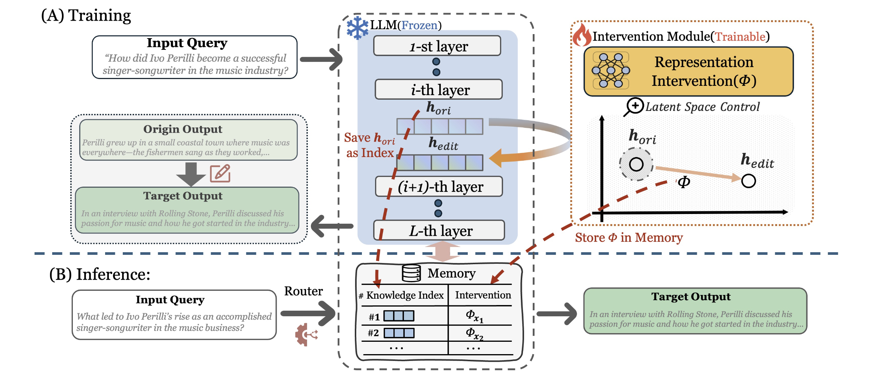
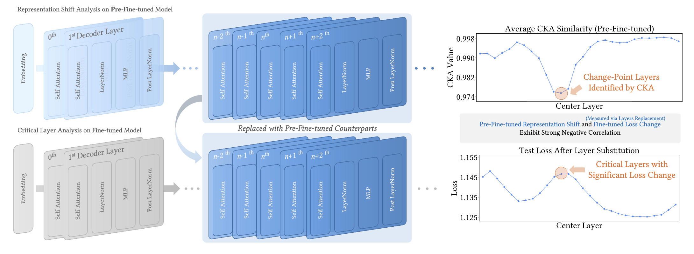
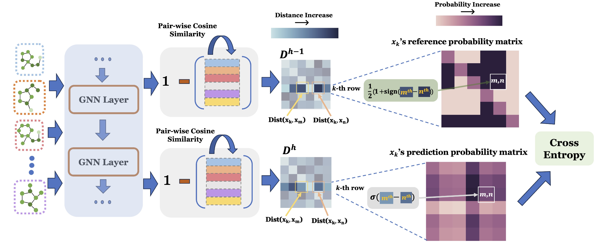
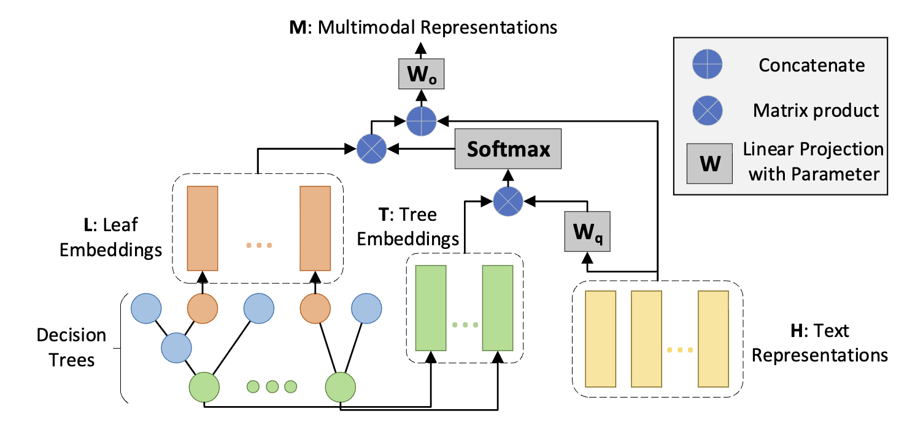
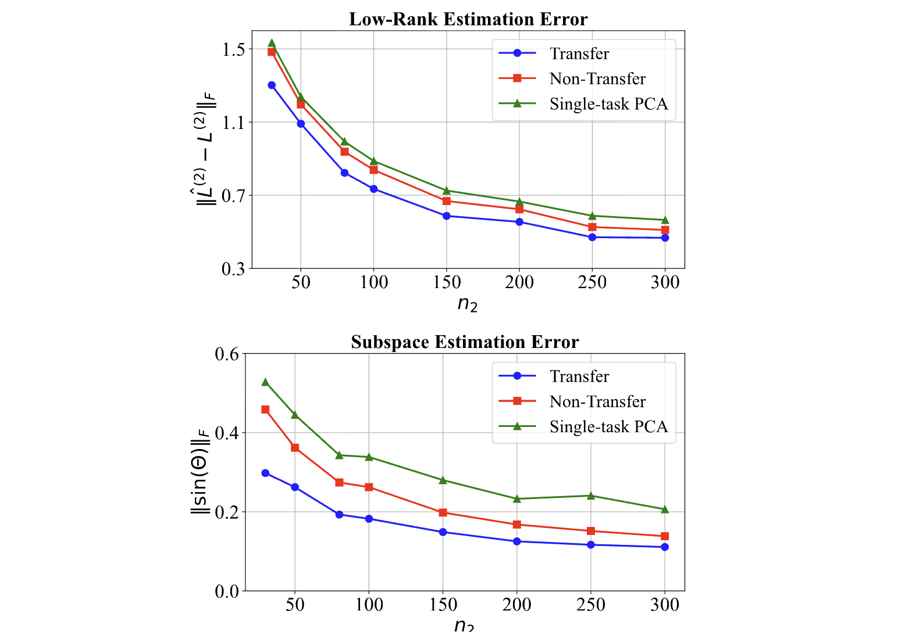

I am a Ph.D. student candidate in the Department of Computer Science at Dartmouth College, advised by Prof. Yujun Yan.
My research focuses on the science of Language Models, particularly on understanding their behavior during both training and inference through methods that probe their internal mechanisms. I aim to understand how LLMs work internally and leverage that understanding to develop technical methods that enhance their performance.
Educations
- 2023.09 - present, Ph.D. in Computer Science, Dartmouth College.
- 2019.09 - 2023.06, B.S. in Computer Science, Nankai University.
News
- 2025.12: We will present our work at Unireps@NeurIPS 2025!
- 2025.11: Check out our paper on customizing LLM memory by controlling their hidden states.
- 2025.11: Passed my comprehensive exam!
- 2025.06: Started my internship at NEC Laboratories America at Princeton, NJ.
- 2025.05: One paper accepted by Findings of ACL 2025.
- 2024.09: One paper accepted by NeurIPS 2024.
Publications

Representation Interventions Enable Lifelong Unstructured Knowledge Control
Xuyuan Liu, Zhengzhang Chen, Xinshuai Dong, Yanchi Liu, Xujiang Zhao, Shengyu Chen, Haoyu Wang, Yujun Yan, Haifeng Chen

Spectral Insights into Data-Oblivious Critical Layers in Large Language Models
Xuyuan Liu, Lei Hsiung, Yaoqing Yang, Yujun Yan
Findings of ACL 2025 also in Unireps@NeurIPS 2025

Exploring Consistency in Graph Representations: from Graph Kernels to Graph Neural Networks
Xuyuan Liu, Yinghao Cai, Qihui Yang, Yujun Yan
NeurIPS 2024

TreeMAN: Tree-enhanced Multimodal Attention Network for ICD Coding
Zichen Liu, Xuyuan Liu, Yanlong Wen, Guoqing Zhao, Fen Xia, Xiaojie Yuan
COLING 2022 (ORAL)

Low-Rank Plus Sparse Matrix Transfer Learning under Growing Representations and Ambient Dimensions
Jinhang Chai, Xuyuan Liu, Elynn Chen , Yujun Yan
Honors
- 2023, Dartmouth Fellowship
- 2022, Academic Excellence Scholarship, Nankai University
- 2022, Scientific Research Innovation Scholarship, Nankai University
Services
- Conference Reviewer: NeurIPS 2024-2025, ICLR 2025-2026, ICML 2025-2026, KDD Dataset&Benckmark 2026